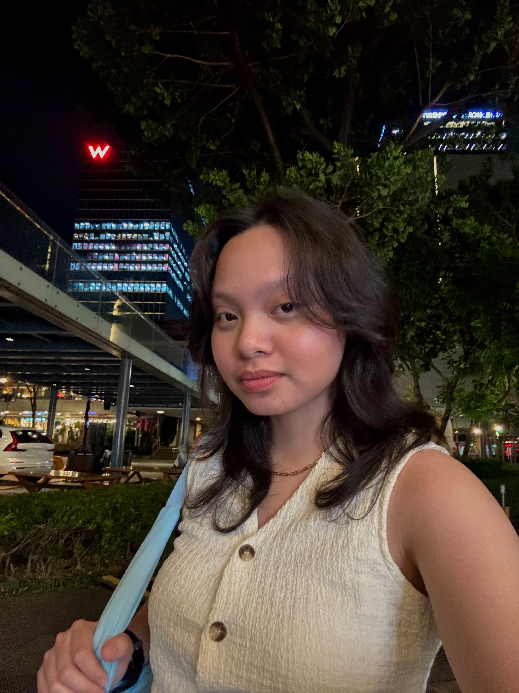

About me

I’m a BSIT student at De La Salle University–Dasmariñas, graduating in 2027. I’m most into web development through UI/UX and front-end design, and I’m curious about aviation technology systems too.
Right now I’m looking for a front-end or UI/UX OJT placement (486 hours) where I can use React, Angular and Figma to build interfaces people find easy to use.
Skills
HTMLCSSJavaScriptTypeScriptReactAngularBootstrapASP.NETPHPJavaPythonC#SQLMongoDB
FigmaPhotoshopIllustratorAnimateGit/GitHubVS CodeVisual Studio 2022Android StudioMicrosoft Azure
LeadershipProject managementCommunicationTeamworkEnglish & Filipino
Education & certifications
- BS Information TechnologyDe La Salle University–Dasmariñas · expected 2027
- Dean’s List, 7 semestersGPA range 3.48 to 3.94 · First Honors in 6 of 7 semesters
- 100% academic scholarship2nd Sem 2025–2026 · GPA 3.94
Experience
- Class Vice PresidentDLSU-D · 1st and 2nd yearHelped organize class activities and events, and handled student concerns.
- Student Government Committee MemberCollege of Information and Computer StudiesHelped plan college programs and IT community events.
- Committee MemberDLSU-D Patriots of Animal Welfare and SupportSupported animal welfare and awareness campaigns.